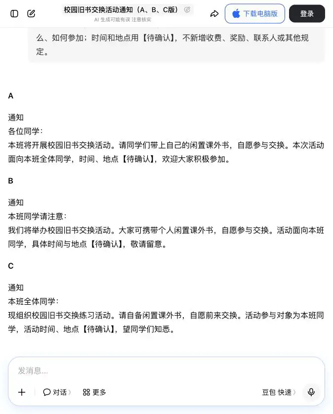
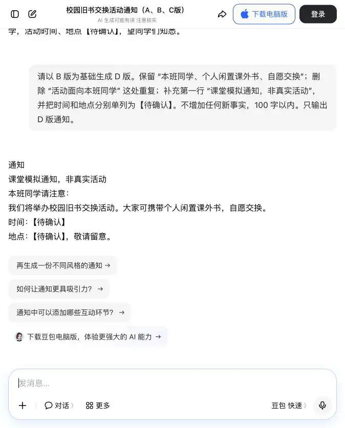
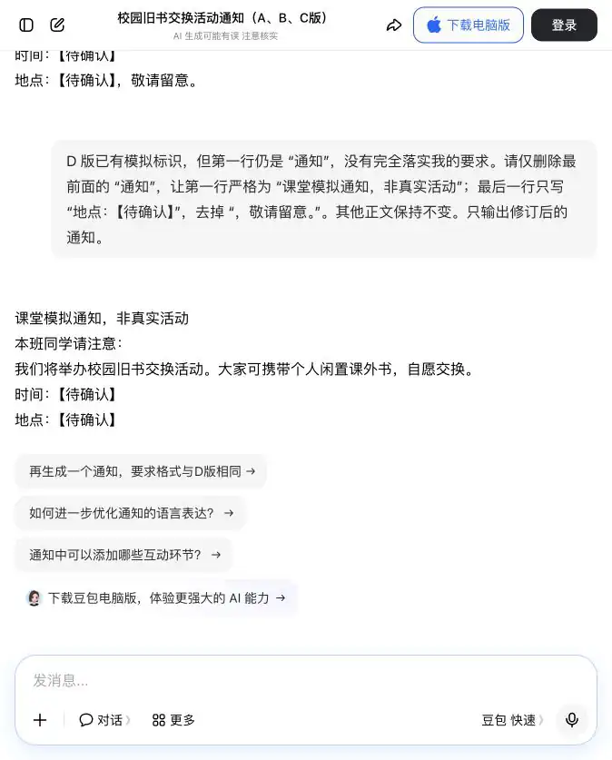

完成一份“AI 回答反馈记录卡”：保留任务材料、A/B/C 原回答、评分依据、反馈语、D 版和逐条复核结论。全课只交这一个文档，不另交海报或思维导图。
保存建议：05_AI回答反馈记录卡_姓名.docx
第一章｜AIGC 理论基础
从“我觉得不好”走向“我能说清哪里要改”：理解训练中的反馈，练习对 AI 回答提出可核验的修改要求。
上节课我们探索了大模型的“通识教育”与“专业深造”，理解了预训练赋予模型广泛知识、而后训练与微调（SFT）让模型学会规范对答。
本课学习节奏： 8 分钟看问题与成果 → 22 分钟概念与小判断 → 12 分钟分析示范 → 30 分钟动手改写 → 6 分钟同桌复核 → 2 分钟总结。共 80 分钟，实际进度可随课堂调整。
板块 ② 本节你将学会
完成一份“AI 回答反馈记录卡”：保留任务材料、A/B/C 原回答、评分依据、反馈语、D 版和逐条复核结论。全课只交这一个文档，不另交海报或思维导图。
保存建议：05_AI回答反馈记录卡_姓名.docx
先分清两个层面：开发者通过训练改变模型；使用者在对话里补充要求，让本次回答更合适。本课动手完成的是后者，同时理解前者为什么需要可靠的评价。
概念： 强化学习是一类学习方法：系统尝试行动，得到奖励信号，再由训练算法调整策略，使以后获得较好结果的机会提高。在语言模型训练中，生成回答可看作行动；“奖励”是用来评价结果的数值信号，不一定来自人工，也可以来自答案校验或程序测试。
例子： 学习投篮时，不只是听到“不错”，还要知道是否进球，并据此调整动作。语言任务中，“只要字数多就给高分”会鼓励冗长；“事实有依据、内容完整”才更接近本课的目标。
容易混淆： 在聊天框里写“删掉这句话”属于补充输入。回答改变，不能证明模型参数已改变，也不能保证下一次新对话会记住。
一句记住：奖励决定优化方向，但方向本身也可能设置错。再看一个反例： 如果评通知只奖励“热闹”，带有“到场就送礼物”的版本可能得高分，但材料根本没有礼物。分数提高了，通知反而不能用了。因此，要先设事实底线，再比较表达。
不一定。得分取决于评价标准。若标准只看长度，就可能奖励无关内容。先问“有没有编造”，再问“有没有说清楚”。
概念： RLHF 是“基于人类反馈的强化学习”。一种经典流程是：先用示范做监督微调（SFT）；再收集人对同题回答的偏好，训练奖励模型预测这种偏好；最后用 PPO 等强化学习算法优化模型参数。不是每次生成都由人现场评分，也不是所有模型都只用这一条流程。
例子： 同样写活动通知，人通常更偏好信息准确、对象清楚的版本，而不是编造奖品的热闹文案。多份这样的比较可成为偏好数据。“多数人喜欢”仍不等于内容真实，需要先核对材料。
本课对应： 你负责比较、给理由，体验“如何提供有用偏好”。之后让 AI 改写，只是普通对话练习；本课没有训练奖励模型，也没有运行 PPO。
一句记住：课堂学的是评价与反馈方法，不是现场训练一个大模型。把三个术语翻成日常话： SFT 是“看合格示范学着答”；奖励模型是“学习预测哪份回答更受偏好的评分器”；PPO 是“利用奖励调整模型的一种训练算法”。评分器也可能判断错，所以不能用它的高分代替事实检查。
不是。同一份准确通知，有人喜欢简短，有人喜欢亲切，这属于表达偏好；但通知中编造时间，是事实问题。允许偏好不同，不意味着允许事实错误。
概念： 推理是根据条件与规则得出结论。思维链通常指分步推理的中间过程；它不是本课“生成—评分—改写”的操作流程。页面显示的一段解释，也不应被当作模型内部机制的完整、忠实记录。
例子： “每人 3 本，4 人共几本？”可用 3×4＝12 核验；但材料没说来了几个人，就不能根据一段流畅解释编出人数。对于通知，则逐句追问“这条信息在材料哪里？”
怎么用： 可以要求“给出答案和简短依据，列出待确认项”，不要求披露隐藏推理。先检查结论、证据和条件，再看表述是否清楚；文字长短不是正确性的证据。
一句记住：看得懂解释，还要核得对答案。跟着核一次： 材料说“每人最多带 3 本书，4 人参加”。只能推出“最多 12 本”，不能说“实际带了 12 本”。核验时依次找条件“最多”、算式“3×4”、结论“最多 12 本”；漏掉一个词，就可能把上限写成事实。
不对。解释长短不能证明正确。这个例子只需核对“最多”是否保留、乘法是否正确、是否误称实际数量。
概念： 按 DeepSeek-R1 原始论文，R1-Zero 探索了不先做监督微调的强化学习；R1 则结合冷启动示例、多阶段监督微调与强化学习。因此，不能把 R1 简化为“人打分以后用 PPO 改写”。
例子： GRPO 会在训练时比较同题一组输出的相对奖励，形成更新信号。可类比“同一题的多份答卷相互比较”，但本课手工排 A/B/C 不是执行 GRPO。蒸馏则可类比用较强模型生成的优质示例帮助较小模型学习，并不保证学会全部能力。
怎么判断： 本课用豆包演示反馈，不把豆包的回答标成 R1 输出。没有可确认的 R1 入口也能完成练习；这不构成对 R1 性能的实测。
一句记住：认识训练方法，不把一次聊天当作算法实验。先抓住区别： RLHF 强调人类反馈的来源；GRPO 是一种利用同题多份输出的相对奖励进行优化的方法。两者不是两个聊天按钮，也不能简单理解为二选一。R1 的训练还涉及可核验任务的奖励，不只依靠“人更喜欢哪份回答”。
不是。我们只做了人工比较，没有运行训练算法或更新参数。可以借这个活动理解“同题比较”，但不能把活动当作算法实现。
经典 RLHF 示意（开发者训练）：
本课操作示意（学生使用工具）：
下方流程没有奖励模型训练或参数更新步骤。图是教学示意，不是软件截图。
不对。只能确认 AI 根据新输入改写了本次回答，不能据此证明进行了模型训练。
核心案例｜AI 如何根据人类反馈改进实习建议
课堂模拟：学生先选出更好的回答，再把理由反馈给 AI，观察下一次回答会怎样变化。AI 为“高职学生怎样准备实习”生成 A、B、C 三份建议。三份都通顺，但有的太空泛，有的包含无法确认的信息。
学生代表“人类反馈者”，按“真实、清楚、能做到”给三份回答评分，再把第一名的优点和需要修改处明确告诉 AI。
反馈不能只写“写得不好”。要具体说清：保留什么、删掉什么、补充什么；再检查 D 版是否落实要求。未改进时如实指出问题，不能预先认定它一定更好。
人类反馈不是给 AI 打分就结束，而是把“偏好理由”变成下一次生成的改进要求。这模拟了提供偏好的环节；后续对话改写不是 RLHF 训练。
以下是示范材料，不是实习单位的真实要求。重点看：评价时要说清理由，改写时要落实理由。
“实习前要认真准备，听从安排，努力学习。”
问题：方向没错，但学生不知道今天先做什么。“请在 6 月 1 日前把简历发给实习单位王老师，并携带三份纸质材料。”
问题：日期、联系人、材料数量没有来源，不能直接当事实采用。“先查看学校或实习单位发布的通知；按通知整理简历和所需材料；不确定的信息先向班主任或单位确认。”
优点：有顺序、有行动，并保留了核验环节。反馈：保留“先看通知、再确认”的顺序；无需删除，C 没有编造具体信息；补充“把不确定事项列成清单”。
D：先查看学校或单位通知，把简历要求、所需材料和报到时间中尚不清楚的事项列成待确认清单；向班主任或单位核实后，再按确认后的要求准备。
这与导论有什么关系？ 比较 A/B/C 对应“提供偏好”；引用原句对应“评价有依据”；检查 D 对应“核验结果”。整个活动仍是对话使用，不是模型训练。
概念回顾 用这张图回顾四个概念即可；本节不要求另交思维导图，唯一必交成果是“AI 回答反馈记录卡”。
活动：校园旧书交换。对象：本班同学。带什么：自己的闲置课外书。参加方式：自愿交换。时间、地点：尚未确定。材料没有提供收费、奖励或联系人，不得自行增加。
你要交的是回答改进记录，不是真实活动通知。请在文档首页写“课堂模拟”。不用上传同学姓名、电话或其他个人信息。
新建 WPS 空白文字文档，写上“课堂模拟”。打开豆包新对话，复制以下整段发送。不要让 A 只写时间、B 只写材料；三个版本必须面对相同任务。
课堂虚构练习，不发布通知。材料：校园旧书交换；参加对象为本班同学；带自己的闲置课外书，自愿交换；时间、地点尚未确定。 请依据同一份材料写三份不同表达的通知，分别标为 A、B、C，每份 80 字以内。 每份都需写明对象、带什么、如何参加；时间和地点用【待确认】，不新增收费、奖励、联系人或其他规定。
将真实生成的 A/B/C 原文复制到文档中，不先改字。少生成一个就追问补全；不要把下方截图抄成自己的运行结果。

每项打 0、1 或 2 分，共 6 分。先自己评分，不让 AI 代替你决定。每份至少引用一句原文作依据。
| 项目 | 0 分 | 1 分 | 2 分 |
|---|---|---|---|
| 有依据 | 新增收费、奖励、具体日期等事实 | 没编造，但未说明时间或地点待确认 | 不新增事实，时间地点均标待确认 |
| 信息全 | 对象、带什么、方式中缺两项以上 | 缺一项 | 三项齐全且对应材料 |
| 表达清楚 | 表达矛盾或无法理解 | 可理解，但有重复或超出 80 字 | 无明显重复，80 字以内，能看懂怎么参加 |
底线： 有依据得 0 分，先标“不可直接采用”，不能让其他高分抵消编造事实。同分可以并列；再说明选择哪个作为修改底稿。不是必须评出三个不同名次。
A：有依据__/2，信息全__/2，表达清楚__/2；原句与理由：__ B：有依据__/2，信息全__/2，表达清楚__/2；原句与理由：__ C：有依据__/2，信息全__/2，表达清楚__/2；原句与理由：__ 我选择__版，因为__；仍需改进__。
B 中“本班同学请注意”和“活动面向本班同学”重复。可保留完整信息，删除重复对象，再补充醒目的“课堂模拟”标识。三份都正确时，也可以改善结构；不要为了凑反馈假称内容错误。
截图 B 写了“具体时间与地点【待确认】”，也没有新增收费或奖励，所以“有依据”可记 2 分；“本班同学”“闲置课外书”“自愿参与交换”齐全，所以“信息全”可记 2 分；对象重复出现，所以“表达清楚”可记 1 分。合计 5 分。这个分数只针对截图 B，不可直接套在你自己生成的 B 上。
字数怎么核： 选中单份通知正文，在 WPS 的字数统计中查看。统一按可见字符计算，标点计入，空格、换行及 A/B/C 版本标签不计入；三份使用同一口径。
✓ 三份都有评分和原句依据；选出底稿，而不是只写“B 最好”。填写三个动作：保留哪句，删除哪句，补充什么。如果确实没有要删除的内容，可以写“无，保留现有信息”，说明理由，不强行制造错误。
原回答：【粘贴选中的完整原文】 保留：【指出已有优点】 删除：【引用具体原句；无需删除则写“无”并说明理由】 补充：【写清缺少的标识、结构或材料内的信息】 请据此生成 D 版通知，100 字以内。时间和地点分别写【待确认】，第一行注明“课堂模拟通知，非真实活动”。不增加材料以外的事实。
例如，针对截图 B：保留本班同学、闲置课外书、自愿交换；删除重复的“活动面向本班同学”；补充模拟标识，把时间和地点单独列出。
✓ 反馈引用了自己的原回答；不是只写“更好一点”。在同一对话中发送“原回答＋反馈要求”，等待生成完毕。把 D 原文复制进文档。逐条检查保留、删除、补充是否落实，不用“看起来更好”代替证据。

保留项：要求__；D 中对应原句__；落实/未落实。 删除项：要求__；D 中是否仍出现__。 补充项：要求__；D 中对应原句__；落实/未落实。 事实检查：是否新增材料外内容__。 结论：改进/未改进/部分改进，理由__。
没有落实就只补发一次具体纠正要求，保留失败版和修订版，不覆盖证据。若 A/B/C 或 D 未生成，写“未生成”，可先做纸面评价；不要标记整项实操已经完成。
注意比较条件： A/B/C 的长度要求是 80 字以内；D 增加了模拟标识，放宽到 100 字。因此不能仅凭 D 更长或总分变化说明效果更好。重点比较事实是否保留、重复是否去掉、指定修改是否落实。

按下方模板整理为一个 WPS 文字文档，文件 → 另存为 → DOCX，命名 05_AI回答反馈记录卡_姓名.docx。关闭后重新打开确认文字和插图仍在；未保存前不要关闭。
标题：AI 回答反馈记录卡（课堂模拟） 1. 使用工具、练习日期、固定材料 2. A/B/C 原文 3. 三项评分、引用的原句和选择理由 4. 我实际发送的反馈 5. D 原文与逐条落实检查（有返工则保留） 6. 一句结论：本次是对话改写，不是模型参数训练。
可将关键真实对话截图插入同一文档：Mac 用 Shift＋Command＋4；Windows 用 Win＋Shift＋S。截图只截本次任务，不包含账号或私人聊天。全文以可读文字为主，不把整份记录缩成一张小图。
接下来的 6 分钟同桌复核：让对方指出一条反馈和对应变化，再问“有没有编造材料外事实？”有问题就修改记录，保留真实结论。全课只交这一个 DOCX。
✓ 文档能重新打开；原文、评分、反馈、D、证据和结论齐全。不另交作品。口头回答：① D 更长就更好吗？② 评分相同能并列吗？③ 发出一次反馈就训练了模型吗？
不要求披露内部推理；重点核查答案、步骤依据和适用条件。
下一节《AI绘图原理：Stable Diffusion深度解析》会在今天的基础上继续练习新的方法和工具。
① 不一定，要看事实与要求。② 可以，但要给理由。③ 不是；课堂对话没有执行参数训练。
概念参考：人类反馈与奖励模型的经典流程；DeepSeek-R1 原始论文（2025 年版本）。来源用于说明训练方法，不代表当前工具默认使用这些模型。